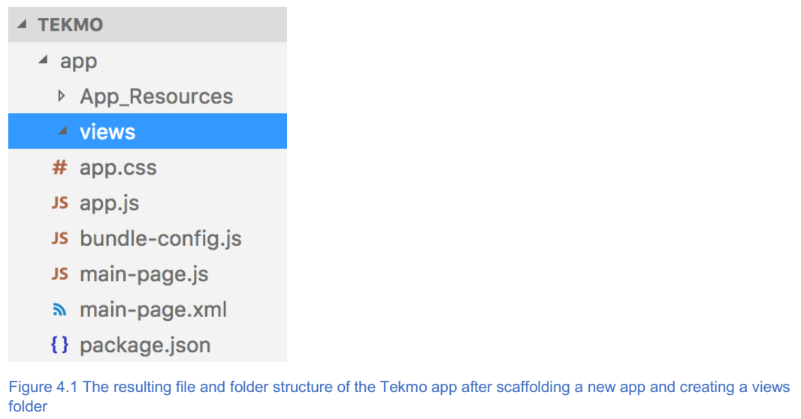
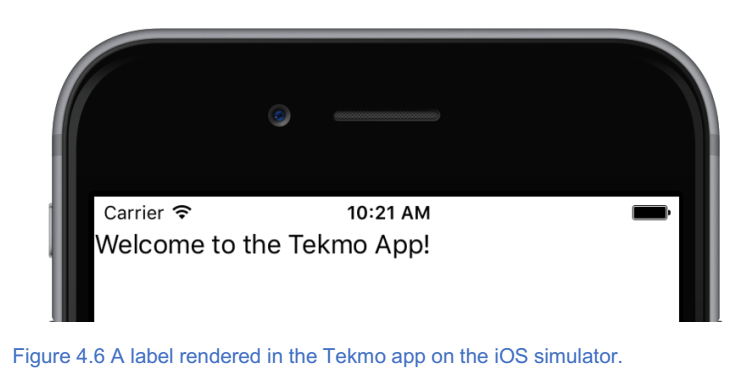

5. 页面和导航¶
本章涵盖
- 创建多页面应用程序；
- 为每个页面添加多个
UI元素； - 响应事件并在应用程序页面之间导航；
在第3章中，您了解了 NativeScript 应用程序的结构。您还了解了 NativeScript 的惯例如何帮助您组织应用程序代码并使开发更加轻松。现在是时候了解一下您在前几章中学到的知识，并开始构建专业的移动应用程序。
在接下来的几章中，您将学习如何为 Tekmo 创建一个多页移动应用程序， Tekmo 是一家销售复古视频游戏和视频游戏配件的虚构公司。 Tekmo 希望通过为 iOS 和 Android 创建一个移动应用来展示他们销售的产品，从而扩大其客户覆盖范围。这款移动应用程序是他们首次涉足移动领域，他们希望保持简单，模仿他们的网站。该应用程序将由以下四个页面组成：
- Home
- About
- Contact Us
- Products
在本章中，我们将构建 Tekmo 应用程序的前两页： Home 和 About 。 Home 将成为用户在启动 Tekmo 应用程序时看到的第一个页面。在主页上，用户将受到欢迎，然后可以导航到其他三个页面。 About 页面将分享 Tekmo 公司的历史，他们对游戏的热情以及公司的使命声明。通过构建这两个页面，您将学习如何创建多页面以及如何在页面之间导航。在未来的章节中，我们将通过构建页面向 Tekmo （联系我们页面）提交问题和反馈并浏览复古视频游戏列表（产品页面）来完成 Tekmo 应用程序。让我们开始吧！
5.1. 创建多页应用¶
在第3章中，我们讨论了 NativeScript 应用程序的组织结构；让我们学习第3章中学到的知识，并通过创建一个新的多页 NativeScript 应用程序来应用它。大多数 NativeScript 应用程序是多个页面的集合，您可以在页面之间导航。如果这听起来有些压倒，不要担心。 NativeScript 提供了几种简单的方法在页面之间导航，您将在整本书中了解它们！现在，让我们深入了解并了解页面和导航，同时构建 Tekmo 应用程序。
就像在第2章中创建 hello world 应用程序时所做的那样，使用命令行启动您最喜欢的命令行工具并搭建新的 NativeScript 。使用 tns create 命令命名应用程序 Tekmo 。
tns create Tekmo --template tns-template-hello-world
在第2章中，我们讨论了我们可以使用模板参数来创建 Hello World 应用程序。模板选项告诉 CLI 使用名为 tns-template-hello-world 的模板，该模板是一个简单的应用模板。我们喜欢使用简单的模板开始我们的项目，因为它提供了一个简约的起点，不需要额外的任何东西来开始构建应用程序。
一旦 CLI 完成创建 Tekmo 项目，在您选择的编辑器中打开 Tekmo 文件夹。
小技巧
Visual Studio Code（VS Code）是由Microsoft创建的免费编辑器，旨在为开发人员提供轻量级的文本编辑环境。我们喜欢 VS Code ，并将其视为开发 NativeScript 应用程序的首选编辑器。我们将在整本书中使用 VS Code 。如果您想要尝试使用哪个编辑器，请给 VS Code 一个机会。 您可以下载 Visual Studio 代码 https://code.visualstudio.com 。
注解
在您继续之前，我们需要清理模板并删除各种默认设置。删除 main-view-model.js 文件，然后删除 main-page.js 文件的内容。最后，用这个标记 <Page></Page> 替换 main-page.xml 文件的内容。
在第3章中，您学习了一些组织技巧，可以帮助组织您的应用程序。我们的应用程序将很小，因此我们将使用一个名为视图(views)的文件夹来整理我们的所有页面。继续操作，并在 app 文件夹下创建一个名为 views 的新文件夹。创建视图文件夹后，您的应用程序文件和文件夹应该如图4.1所示。
好的开始，现在是时候用一些页面填充视图文件夹。
5.1.1. 创建Home页面¶
你创建的第一个页面应该是你的应用程序的主页面，这是你的应用程序加载时加载的页面。您可以从第3章回想， app.js 文件包含 application.start 代码，该代码告知 NativeScript 在应用程序启动时加载哪些视图（如清单4.1所示）。
清单4.1新的NativeScript应用程序的app.js文件
require("./bundle-config");
var application = require("application");
application.start({ moduleName: "main-page" }); //NativeScript应用程序的默认主页称为main-page，它加载main-page.xml文件
默认情况下， app.js 文件加载 main-page 页面，该页面对应于 main-page.xml 文件。我们稍后进行更新，但让我们快速查看 NativeScript 页面，然后创建我们的新主页。
页面是由三个文件组成的集合： XML ， CSS 和 JavaScript ，如图4.2所示。

XML 文件定义了用户界面( UI )， CSS 提供了用于设计布局风格的机制，与 UI 交互并协作的业务逻辑驻留在 JavaScript 文件中。
尽管 NativeScript 页面被定义为 XML ， CSS 和 JavaScript ，但您不需要创建全部三个文件； 至少需要创建一个 XML 文件来定义页面的 UI 元素。 剩下的文件（ CSS 和 JavaScript ）是可选的。如果包含它们， NativeScript 将在您打开页面时自动加载它们，但如果它们不在那里， NativeScript 将不会发出抱怨，只会加载 XML 文件。
小技巧
当你创建新页面时，只需创建你需要的文件。如果您只需定义一个 UI ，则只需创建 XML 文件。随着页面开始形成并发展，您可以随时在需要时添加 CSS 和 JavaScript 文件。 从 XML 文件开始可以节省您的时间。
我们将使用我们自己的提示，并立即从我们的主页的用户界面开始。通过在 views/home 文件夹下添加一个名为 home.xml 的新文件来创建 Tekmo 应用程序的主页（图4.3）。

您添加到 Tekmo 应用程序的主页显然是空白的；您将很快添加 UI 元素，但是让我们告诉我们的应用程序在应用加载时加载此新页面。您会记得， app.js 文件是每个 NativeScript 应用程序的入口点。让我们通过使用清单4.2中的代码更新 app.js 文件来启动应用程序时，将主页设置为 home.xml 。
清单4.2更新了app.js文件以启动home.xml文件
var application = require("application");
application.cssFile = "./app.css";
application.start({ moduleName: "views/home/home" }); //更新起始模块名称以指向位于views/home文件夹中的新创建的主页
注解
请记住我们在第3章中讨论的约定吗？ 当引用一个模块（在本例中是一个页面）时， NativeScript 知道这是一个 XML 文件，因此您不需要将文件扩展名放在 home.xml 中。将 NativeScript 指向 views/home/home 位置足以加载页面。
加载应用程序时，会执行 app.js 文件中的代码。让我们通过运行您的应用程序来验证。在命令提示符下使用 tns run CLI命令确保一切工作正常。
tns run ios --emulator
tns run android --emulator
5.1.2. 增加内容到主页¶
现在是更新 home.xml 文件并在 Home 页面添加一些急需的内容的时候了（我们不会永远让它空白）。使用清单4.3中的代码添加欢迎信息。
清单4.3 views/home/home.xml文件
<Page> //Page元素是页面中所有其他元素的容器，StackLayout元素通知NativeScript运行时将它渲染的元素放在彼此之上。 你将在第五章中学习更多关于StackLayout的知识
<StackLayout>
<Label text="Welcome to the Tekmo App!" /> //用于在屏幕上显示文本的标签
</StackLayout>
</Page>
正如你可能已经注意到的那样，你的页面的 XML 标记看起来就像是一个网页的 HTML 。 我们将在一分钟内解释每个 UI 元素。但是在我们开始之前，我们希望您看到在 HTML 应用程序中可以找到 NativeScript 的 XML 和 HTML 之间的对应关系。 图4.4说明了这些相似之处。
仅仅因为 NativeScript 页面是使用 XML 定义的，并不意味着您可以将任何 XML 元素放入页面中。在继续阅读本书时，您将学习各种可协同工作的 XML 元素。如果您迫不及待，可以在 http://docs.nativescript.org/ui/components 上在线查找可用参考文献的完整参考。
现在，让我们回到使用清单4.4中的代码构建主页，该代码与清单4.3中显示的代码相同，但为了方便起见，此处显示。
清单4.4 views/home/home.xml文件
<Page>
<StackLayout>
<Label text="Welcome to the Tekmo App!" />
</StackLayout>
</Page>
所有 NativeScript XML 页面都必须以 Page 元素开头。 Page 元素是 NativeScript 页面中所有其他元素的父容器。就像 HTML 页面的 body 标签一样，您将所有页面的内容和其他 UI 元素放置在 NativeScript 页面 Page 元素中。图4.5显示了这个概念，几个 UI 元素嵌套在 Page 元素下面。
在 Page 元素下面，我们放置了一个 Stack Layout 和 Label 元素，它们一起在屏幕上显示欢迎使用 Tekmo App 文本。
注解
堆栈布局是用于页面中组织其他 UI 元素的 UI 元素。堆栈布局可与嵌套在其中的其他 UI 元素一起使用。
注解
标签是用于在页面中以可视方式显示文本的 UI 元素。就像其他用户界面(UI)元素。
关于堆栈布局如何工作的细节（甚至是他们真正的目标）现在并不重要，我们将在第5章介绍详细信息，但现在想象一下，堆栈布局使其内部的所有元素都出现在屏幕上，我们在本章中创建的每个页面都需要在页面元素正下方的堆栈布局。 让我们仔细看看 Label 元素。
标签不言自明：它们在屏幕上显示文字。除了使用 Label 元素的 text 属性来设置要显示的文本之外，没有什么可说的了。
现在您已经了解了主页上所有内容的基础知识，在模拟器中打开更新的应用程序，您将看到如图4.6所示的内容。
如何使用 NativeScript CLI 运行 Tekmo 应用程序
在第2章中，我们向您介绍了 tns run 命令。您可以使用以下 CLI 命令在 Android 模拟器或 iOS 模拟器中运行 Tekmo 应用程序：
tns run android --emulator
tns run ios --emulator
有关 CLI 命令的详细列表，请参阅附录B。
5.2. 创建另一个app页面¶
由于只有一个页面， Tekmo 应用程序并没有太多用途，所以现在可以通过创建另一个页面向 Tekmo 应用程序添加更多内容。
5.2.1. 创建About页面¶
我们正在创建的第二页是 About 页面。将另一个 about.xml 文件添加到 views/about 文件夹中（图4.7）。

小技巧
请记住，保持一致和有组织是非常重要的，所以我们使用第3章中提出的约定，并为应用程序的每个页面添加一个单独的文件夹。
就像我们创建主页时一样，我们需要更新 About 页面的 XML 以提供内容。清单4.5包含页面和堆栈布局元素下面带有多个标签的 About 页面。
清单4.5 views/about/about.xml文件
<Page>
<StackLayout>
<Label text="Small company that wants to bring you the best in retro gaming!" />
<Label text="Come visit us in Louisville, KY" />
</StackLayout>
</Page>
让我们看看模拟器中的页面。尽管我们还没有学会如何从“关于”页面导航，但我们使用快速技巧来查看“关于”页面。 将 app.js 文件中主模块从 views/home/home 更改为 views/about/about 并运行您的应用程序。
小技巧
如果您正在处理通常需要导航至其进行测试的特定页面，请将其设置为默认页面。 这有助于缩短开发时间，并立即加载开发中的页面。只要确保在完成后将其改回！
图4.8显示了在模拟器中运行更新后的应用程序后的 About 页面。
马上，你可能已经注意到了一些奇怪的东西：标签文本正在被截断。这可能会发生，取决于页面呈现的设备的分辨率和方向，所以在开发移动应用程序时，您需要考虑这些问题。
注解
尽管 NativeScript 可以让你编写一次并在 iOS 或 Android 上运行，但仍需要注意设备分辨率。市场上有数百种设备，这意味着用户使用您的应用时可能会有数百种不同的分辨率。设备分辨率是您在编写应用时必须考虑的问题。不过请不要担心，本书稍后会介绍一些技巧，以帮助确保您的应用在多种设备和解决方案中正常工作！
虽然您确实需要考虑文本长度和屏幕大小，但 NativeScript 可以轻松实现：只需将 textWrap 属性添加到标签即可。以下代码显示如何使用 textWrap 并确保标签文本不会被切断。
<Label textWrap="true" text="Small company that wants to bring you..." />
小技巧
除非您试图将文本限制为单行，否则您需要将标签的 textWrap 属性设置为 true 。 在创建标签后立即设置它。
将 textWrap 属性设置为 true 将使 NativeScript 在多行上渲染标签元素（标签的 textWrap 属性就像在您喜欢的文本编辑器中进行文本自动换行一样）。标签文字环绕的位置取决于页面正在渲染的设备。 在图4.9中，您可以看到 textWrap 属性在渲染 iPhone 6 设备上的 About 页面时的行为。

使用文本包装是您可以轻松解决多个屏幕分辨率和方向的问题之一。目前，很高兴知道当发生不良事件时， NativeScript 会给你提供支持（确定文本截取并不是世界上最糟糕的事情，但至少知道 NativeScript 开发人员为您考虑了这一点很好）。随着您继续了解 NativeScript ，我们将详细介绍如何处理多个平台。 现在您已完成创建 About 页面，现在该讨论在主页和关于页面之间进行导航。
注解
继续之前，请确保将 app 的起始页面更改回 app.js 文件中的 views/home/home ！
5.3. app页面之间的导航¶
直到现在，我们一直生活在 Tekmo 应用程序的 UI 层，创建 XML 文件，并忽略了 JavaScript 中的业务逻辑。现在我们已经准备好开始在页面之间导航，现在是时候展开你的 JavaScript 技能了。
与 HTML 应用程序类似， NativeScript 应用程序中的页面之间的导航会响应一个操作（通常是点击链接或按钮）。在接下来的部分中，您将学习如何向页面添加按钮，响应用户点击的按钮，然后导航到其他页面。这听起来可能会让人感到困难的，但它会变得非常简单。
注解
您可能已经注意到我们没有说在 NativeScript 应用程序中点击链接和按钮。 这是因为点击是用鼠标完成的，大多数移动设备没有鼠标接口。相反，你用你的手指来点击屏幕。尽管对于几乎相同的操作，这些是两个不同的术语，但如果您错误地说出点击而不是触，那么您可能会从一些核心移动开发人员那里得到一些注意。
5.3.1. 为主页面添加一个按钮¶
在整本书的开头，你已经看到我在页面上使用按钮。以前我说过不用担心按钮的细节 - 感谢您耐心等待！我几乎不认为按钮需要一个介绍，但让我们复习下您期望的在 NativeScript 中的按钮。
注解
按钮是一个用户界面元素，具有视觉和交互的方面。在视觉上，按钮具有显示在屏幕上的文本。作为一个交互点，您可以在 JavaScript 中编写业务逻辑代码，该代码在点击按钮时运行。要创建 Button 元素，请使用 XML 代码 <Button text =“...”/> 。
让我们将按钮概念推广到 Tekmo 应用程序，并在主屏幕上放置一个按钮。该按钮应该允许用户通过点击它来了解关于 Tekmo 的更多信息，然后导航到关于页面。清单4.6显示了 Tekmo 应用程序主页的更新版本，我们在该页面上添加了一个按钮。
清单4.6将一个按钮添加到主页
<Page>
<StackLayout>
<Label text="Welcome to the Tekmo App!" />
<Button text="About" tap="onTap" /> // tap属性告诉NativeScript在点击按钮时调用哪个JavaScript函数
</StackLayout>
</Page>

正如您在清单4.6和图4.10中看到的那样，与标签元素一样， button 元素具有文本属性，您可以设置该文本属性以显示您希望按钮显示给用户的内容。
注解
在 iOS 上呈现时，这些按钮看起来像是一个 Web 链接。 如果您不熟悉 iOS ，则这是 iOS 中按钮的当前本地样式。
您可能也注意到按钮元素有一个附加属性： tap ="onTap" 。 Button 元素的 tap 属性是按钮引发的事件；因为您可能已经猜到该按钮引发了一个名为 tap 的事件，当按钮被点击时。您可以通过将 tap 属性的值设置为相应 JavaScript 文件中某个函数的名称来处理轻击事件。
注解
事件是 NativeScript 应用程序中发生的事件。由于用户与您的应用进行交互或者您的应用已转换为启动，正在关闭，关闭或内存不足等状态，可能会触发事件。当事件发生时，它被称为触发。当您配置应用程序以响应引发的事件时，它被称为处理事件。在 NativeScript 中，您可以通过您在应用中编写的 JavaScript 代码处理事件。
好的，我们只用了几句话就覆盖了很多，我承诺我们会在一分钟内更详细地解释它。现在，让我们专注于按钮。图4.11帮助您可视化点击按钮的过程以及如何调用 onTap() 函数。

现在我们已经可视化并简要地解释了 onTap() 函数的调用方式，让我们回到我们的 NativeScript 页面的概念： NativeScript 如何知道 onTap() 函数在哪个文件中？
5.3.2. 按钮事件¶
当您的应用程序加载主页时，您是否记得装入的内容？您可能还记得第3章中您了解到 NativeScript 中页面命名约定的答案。加载页面时， NativeScript 运行时查找对应的 .js 和 .css 文件以与 .xml 文件一起加载。在这种情况下，运行时正在寻找加载 home.xml ， home.js 和 home.css 。图4.12显示了加载主页时如何使用这三个文件。
回到我们前面的问题。假设我们有一个按钮定义为 <Button text ="About" tap ="onTap"/> ， NativeScript 如何知道 onTap() 函数在哪个文件中？答案几乎太简单了，但为了完整起见，它在页面的相应 JavaScript 文件中查找。在我们的例子中，这是 home.js 文件。
既然我们知道 NativeScript 如何找到 onTap() 函数，那么让我们在 home.js 文件中创建 onTap() 函数。
小技巧
正如我以前所讨论的，在编写应用程序代码时维护约定非常重要。实现事件处理程序是另一种可以使用约定来保持代码可维护性的方法。建议在处理事件时使用附加“on” 在事件名称前面。通过采用这一惯例，随着应用程序的增长，您将更容易维护它。
清单4.7概述了 onTap() 函数定义和导航到 About 页面。代码中有很多新概念，所以我们将在下面介绍它。
清单4.7在home.js文件中实现onTap函数
var frameModule = require("ui/frame"); // 获取用于导航的NativeScript框架模块的引用
function onTap() {
frameModule.topmost().navigate("views/about/about "); //使用框架模块导航到关于页面
}
exports.onTap = onTap; //该函数必须导出，以便NativeScript运行时可以从UI访问它
在 home.js 文件的顶部，我们通过要求 ui/frame 来加载框架模块。 NativeScript 中的导航依赖于框架模块。
注解
框架模块是包含在 NativeScript 核心模块中的另一个模块，它是 UI 和业务逻辑代码在整个 NativeScript 应用程序中使用的跨平台抽象的集合。通过调用最顶层框架的 navigate() 方法，框架模块用于在应用程序中的页面之间导航。如果有帮助，可以将您的应用程序框架视为包含，加载和导航页面之间的外部包装。
注解
最顶层的框架是一个跨平台的抽象，用于指示负责导航和加载新页面的最外面的框架。
在框架模块的声明之后，你会看到列表4.7中的 onTap() 函数定义。在函数内部，您将看到框架模块用于获取最上面的框架，然后导航到关于页面。
当调用 navigate() 方法时， NativeScript 中幕后会做一些事情。除了正在加载的新页面之外， NativeScript 还会跟踪一些内容，例如之前页面的列表，专门传递到新页面的数据（或变量），以及关于如何转换到新页面动画的的指令（图4.13）。

现在，这并不困难。通过几行代码，您可以响应按钮点击，加载框架模块，并导航到新页面。它真的很容易。 继续并再次运行您的应用程序，然后点击 About 按钮导航到 About 页面。

导航到“关于”页面后，您可能已经注意到它现在看起来有点不同：一个后退链接会自动显示在应用的顶部。显示此信息是因为 NativeScript 正在跟踪您的导航历史记录。在将来的章节中，我们将详细介绍如何使用框架模块来导航和进一步控制历史记录，甚至在页面之间发送数据。
在我们深入了解这些更高级的场景之前，让我们学习如何通过称为转换的动画来对页面导航进行动画处理。
5.3.3. 对页面导航运用动画变换¶
当您在 NativeScript 应用程序的页面之间导航时，新页面将通过从屏幕右侧滑入来加载。如果你问我们，这个动画有点简单。但是，有一个好消息：您可以通过应用称为页面转换的方式轻松更改此动画。
注解
页面转换是当您从一个页面导航到另一个页面时发生的动画。
您可以在 NativeScript 中使用几种不同类型的页面转换，但您需要谨慎使用转换，因为只有一些同时适用于 Android 和 iOS 。 表4.1显示了每个平台可以使用哪些转换。
表4.1导航转换及其可用平台
| 转换 | 可用平台 |
|---|---|
| curlUp | iOS |
| curlDown | iOS |
| explode | Android(Lollipop and later) |
| fade | Android,iOS |
| flipRight | Android,iOS |
| flipLeft | Android,iOS |
| slideLeft | Android,iOS |
| slideRight | Android, iOS |
| slideTop | Android, iOS |
| slideBottom | Android, iOS |
大多数可用的转换都是不言自明的。在 Tekmo 应用程序中，您将使用 slideBottom 转换，因为它在 Android 和 iOS 上均可用。顾名思义， slideBottom 过渡会使您正在浏览的页面显示为向屏幕底部“滑动”。 同样， flipRight 转换会使您正在导航的页面看起来像在向右“翻转”。
注解
当您转换回上一页时，将应用相反的转换。在即将到来的例子中，你将实现 slideBottom 转换；当您回到主页时， slideTop 转换将自动应用。
足够了解过渡的样子后；让我们开始使用它们。更新 home.js 文件以包含列表4.8中的代码。在更新代码时，您会注意到使用了一个名为 navigationEntry 的新对象，并将其传递给 navigate() 函数，而不是传递页面的名称。
注解
导航实体对象是一个名为 NavigationEntry 的接口。当从框架模块调用导航方法时，此接口定义从页面到页面传递的数据。它允许您定义要导航到的页面，页面转换动画以及如何处理导航历史记录。
列表4.8在从主页导航到关于页面时应用slideBottom转换
var frames = require("ui/frame");
function onTap() {
var navigationEntry = { //NavigationEntry变量表示由NativeScript定义的NavigationEntry接口的实例;您可以指定对象的几个可选属性
moduleName: "views/about/about", //moduleName是一个可选属性，用于指定要导航到的页面
transition: { //transition属性将设置您在导航到您定义的模块时要应用的转换。 过渡对象的名称属性是您要使用的过渡。
name: "slideBottom"
}
};
frames.topmost().navigate(navigationEntry);
}
exports.onTap = onTap;
navigationEntry 对象包含 navigate() 函数用于管理页面间导航的几个属性。 在列表4.8中，我们使用 moduleName 和 transition 属性，它们分别表示导航到的页面和导航过程中使用的页面转换方式。
小技巧
在第3章中，您了解了特定于平台的文件命名约定。导航转换对于特定于平台的 JavaScript 文件来说是一个很好的用例，因为并非所有的转换都可以在 Android 和 iOS 上使用。
对你来说不幸的是，世界还没有想出如何将动画放入书本中，所以你不能真正看到 sideBottom 转换（我想你只需要自己尝试一下）。
5.4. 总结¶
在本章中，您学习了如何：
- 在
NativeScript中实现页面； - 点击按钮时，处理按钮的点击事件并实现相应的业务逻辑；
- 使用框架模块在
NativeScript应用程序中的页面之间导航； - 绑定并响应应用程序范围的事件，如应用程序启动事件；